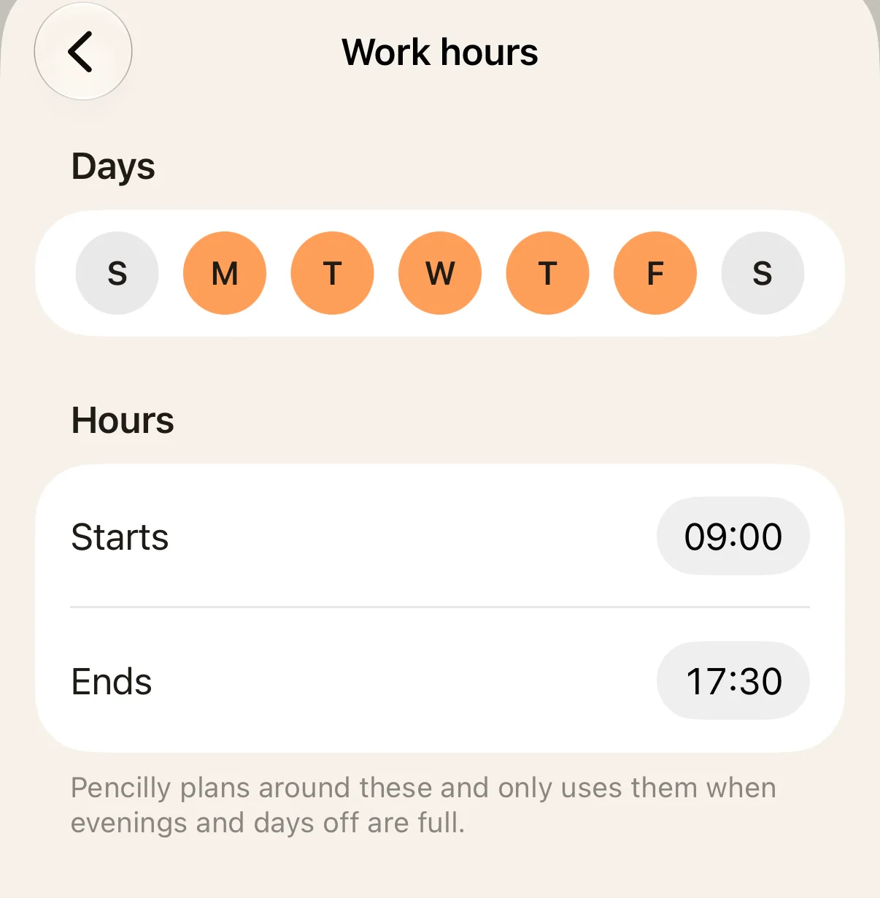
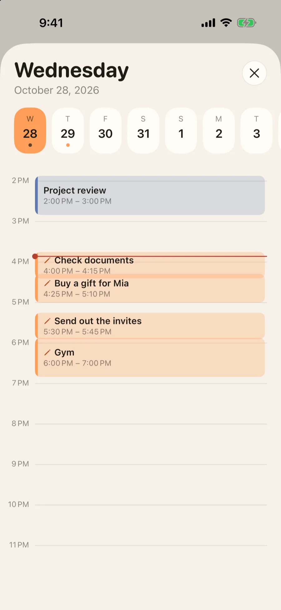
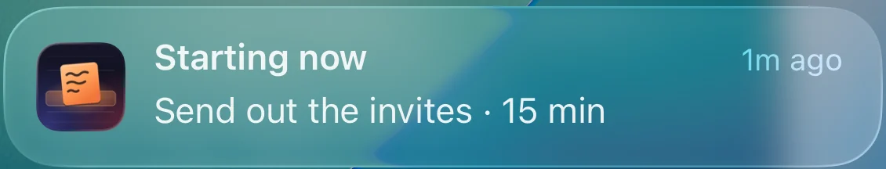

Say what's on your plate.
Pencilly finds the time.
Type it, paste it, scan it or say it. Pencilly slots every task into the gaps of your real calendar, privately, on your iPhone.

Scan to download
Point your iPhone camera here.
- First 10 plans free
- No account
- Nothing leaves your iPhone
A plan from the app, replayed. Hover to pause.
Get it out of your head.
Type it, paste it, scan a page or say it out loud.
- Type
- Write it the way you'd say it.
- Paste
- Drop in a chat, a note or an email.
- Scan
- Point your camera at a list, or pick a photo.
- Say
- Recognised on the device, never on a server.
- Share
- Send a chat, a note or a screenshot from any app.
- Siri
- “Hey Siri, add tasks to Pencilly.” Planned without opening the app.
- Back Tap
- Double-tap the back of your iPhone. Set up once in Shortcuts.

It reads how you actually write.
Pencilly tells apart “at 3pm” from “by 3pm”, and explains every choice in plain words.
Apple Intelligence where your iPhone has it, built-in rules everywhere else. Nothing leaves the phone.
“Gym at 6pm”
A fixed time.
Booked at 6:00 PM.
“Send the report by Friday”
A deadline.
It goes in well before.
“Urgent: call the bank”
Urgent.
Takes the first free gap.
“Groceries after work”
After work.
Waits until your workday ends.
“Email Sam before lunch”
Before lunch.
Done before your lunch break.
“Water the plants in 10 minutes”
A start time.
Starts then.

Every task gets a time, and a reason.
Nothing is saved until you say so
Events reach your calendar only when you tap Add to calendar.
Undo in one tap
Undo takes the whole plan back off your calendar.
Every card explains itself
A one-line reason under each task. Tap any card to adjust it.
It fits around your real day.
Pencilly reads every calendar on your iPhone and never double-books.
- Lunch and dinner stay free.
- Work hours are avoided for every task, unless nothing else fits.
- A gap is left around meetings. Nothing lands on top of one.
- A time you state is always honoured, with a warning if it clashes.


Then get on with your day.
The task you're on lives in the Dynamic Island and on the Lock Screen, with a countdown.
- Done when you finish. +15 min when it runs over, and the rest of your day re-plans.
- A gentle sound and a “Starting now” alert at each start.
- No Dynamic Island? You still get the Lock Screen card.



Your calendar never leaves your phone.
A cloud planner Your calendar Their servers A cloud AI Your plan
Pencilly Your calendar Your iPhone Your plan
- No account
- No servers
- No analytics or ads
- On-device AI and rules
- Scan and voice on-device
- Optional Face ID lock
Built so there's nowhere for your data to go. Read the privacy policy.
Free
10 plans
Your first 10 plans added to your calendar cost nothing.
Pencilly Pro
$4.99 a month
Or $34.99 a year, with a 7-day free trial. Cancel anytime in your Apple ID settings.
Questions.
Short answers. More on the support page.
Is Pencilly free?
The first 10 plans you add to your calendar are free. After that, Pencilly Pro is $4.99 a month, or $34.99 a year with a 7-day free trial (US prices). Manage or cancel in your Apple ID subscriptions.
Does Pencilly need an account or send my calendar anywhere?
No. There are no accounts and no servers. Your calendar, tasks, voice and images stay on your iPhone, and the developer collects no data. Read the privacy policy.
Does it work with Siri, Shortcuts and Back Tap?
Yes. Pencilly adds Siri phrases and Shortcuts actions: "Add tasks to Pencilly" plans and saves tasks without opening the app, "What's next in Pencilly" tells you your next task, and "Plan my week with Pencilly" opens the app with your list. Set the same actions up once in Shortcuts to run them from Back Tap or the Action Button. Adding tasks by Siri uses Pencilly's built-in rules and needs calendar access already granted.
Which iPhones does it work on?
Any iPhone running iOS 18 or later. On an iPhone with Apple Intelligence (iOS 26 or later) Pencilly also uses Apple's on-device model to understand messy text; everywhere else, built-in rules do the work.
Will it double-book me?
No. It never overlaps an existing event, keeps lunch and dinner free, respects your work hours and leaves a gap around events. If your calendar changes while you review a plan, Pencilly checks again when you tap Add and moves anything that now clashes.
Can I lock Pencilly with Face ID?
Yes. Settings has an optional Face ID lock. It uses your iPhone's own authentication and stores nothing anywhere else.
How do I undo a plan?
Tap Undo right after adding it, or delete the events from the "Pencilly" calendar in your Calendar app. Nothing is written until you tap Add to calendar.
What languages does it understand?
English only for now.
Pencilly at a glance.
- What it is
- A day and week planner for iPhone that schedules your to-do list into free time in your calendars.
- Works on
- iPhone, iOS 18 or later. Apple Intelligence (iOS 26 or later) is optional.
- Ways in
- Type, paste, scan, voice, share sheet, Siri, Shortcuts, Back Tap and Action Button.
- Data collected
- None. No account, no analytics, no ads, no third-party SDKs.
- Price (US)
- First 10 plans free. Pencilly Pro: $4.99 a month, or $34.99 a year with a 7-day free trial.
- Language
- English
New to time blocking? Read how to plan your week from a messy to-do list.
Say it once. Let Pencilly find the time.
Your first 10 plans are free. No account to make.